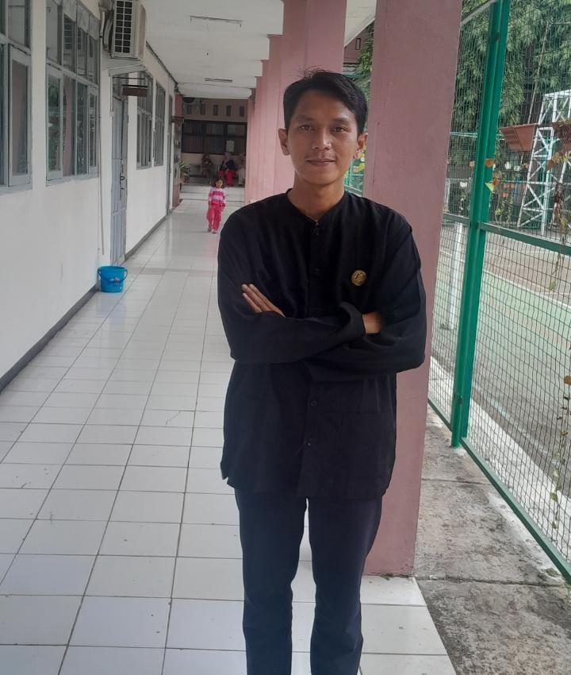

Robby Sopyan, S.Pd., M.Pd
Guru Matematika SMAN 2 Karawang | Sekretaris MGMP Matematika SMA Kab. Karawang 2025-2028
Sebagai seorang pendidik, saya percaya bahwa matematika bukan sekadar deretan angka dan rumus di atas kertas, melainkan sebuah alat sains berpikir kritis untuk menyelesaikan berbagai persoalan nyata di tengah masyarakat.
Selain mendedikasikan diri dalam dunia pendidikan formal, mencoba aktif dalam pemberdayaan kemasyarakatan melalui tulisan berisi opini, gagasan, tulisan ilmiah populer serta kegiatan - kegiatan nyata di lapangan yang mengusung semangat melek numerasi.
"Mengabdi dengan ilmu di ruang kelas, berkolaborasi dengan unsur di luar kelas. Pendidikan dan pemberdayaan masyarakat adalah kunci utama kemajuan bangsa."— Robby Sopyan, S.Pd., M.Pd
Dua Pilar Kiprah & Pengabdian
📘 Pendidikan & Kedinasan
- Pendidik Aktif SMAN 2 Karawang: Mengampu mata pelajaran Matematika dengan fokus pengembangan literasi numerasi berbasis pemecahan masalah kontekstual dan STEM.
- Sekretaris MGMP Matematika SMA Kab. Karawang: Berperan aktif dalam perencanaan workshop peningkatan kompetensi guru, pengembangan alat peraga, dan penyelarasan kurikulum.
- Mitra Riset Akademis: Berkolaborasi secara berkala dengan Perguruan Tinggi dalam pengembangan penelitian tindakan kelas dan verifikasi mutu pembelajaran.
🤝 Kemasyarakatan
- Pemerhati Pemberdayaan Kemasyarakatan: Aktif memberikan opini, gagasan dan solusi berkaitan tentang kemajuan pendidikan.
- Jembatan Aspirasi Warga: Membuka ruang dialog dan komunikasi guna menyerap aspirasi sosial, pendidikan, serta kegiatan peningkatan numerasi secara inklusif.
🎓 Riwayat Pendidikan Formal
Magister Pendidikan Matematika dan IPA (S2)
Universitas Indraprasta PGRI Jakarta
Sarjana Pendidikan Matematika (S1)
Universitas Singaperbangsa Karawang (UNSIKA)